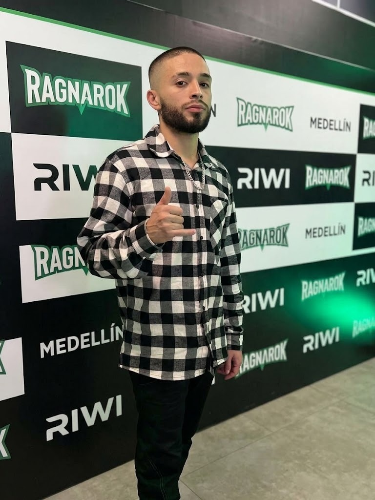
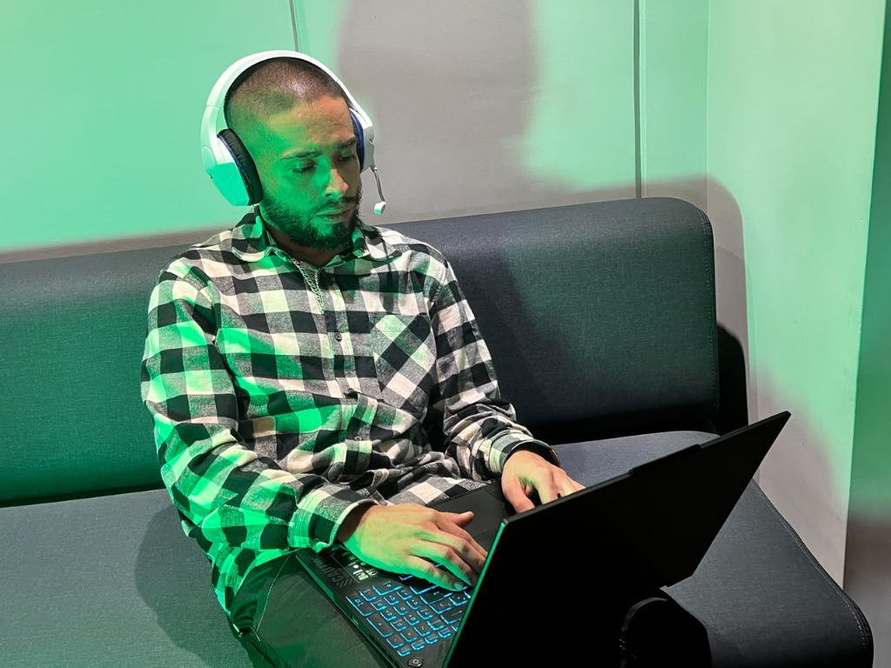
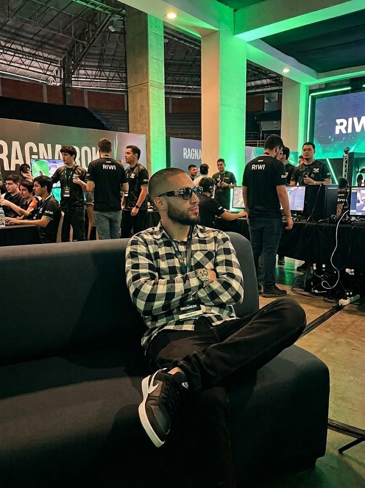
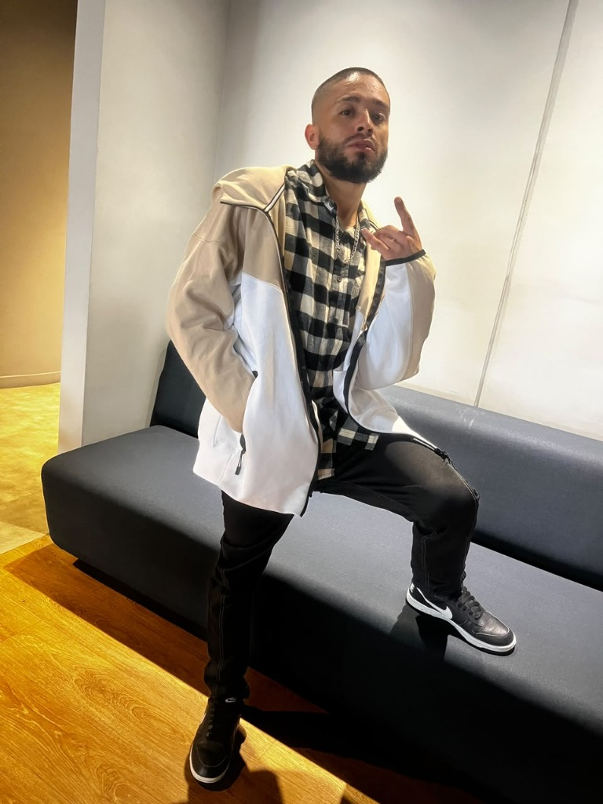
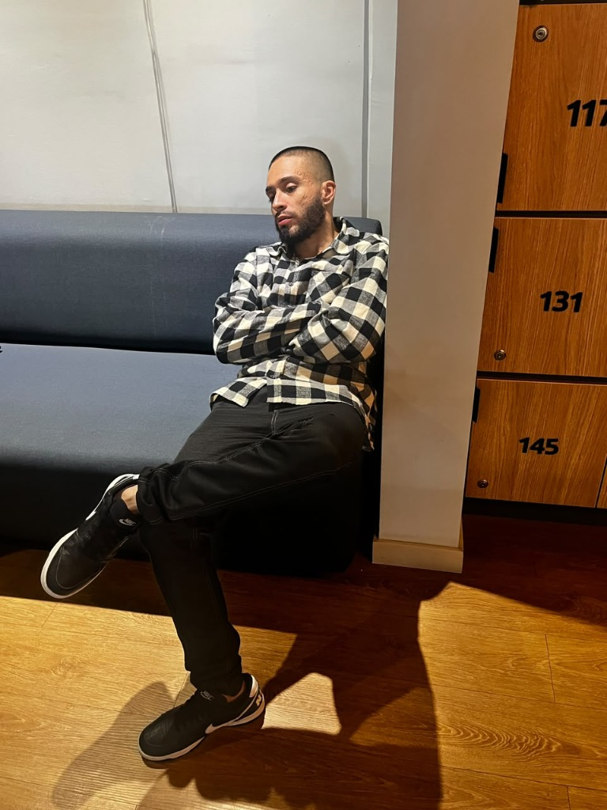
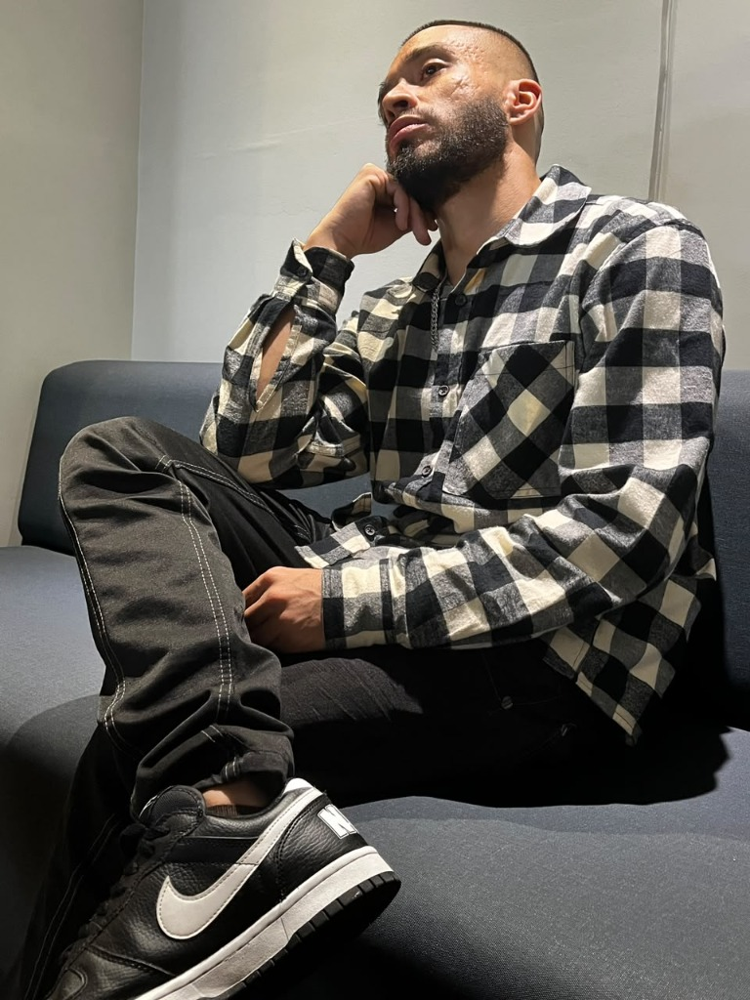
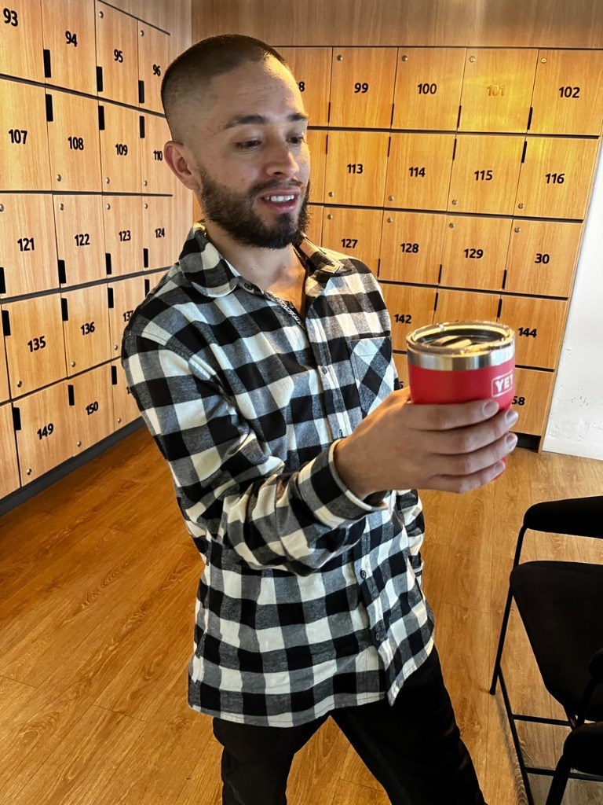

Rueda Libre
Plataforma web para alquiler de bicicletas urbanas. Enfocada en navegación amigable, visualización clara de planes y reservas con marcado semántico y validaciones.
- HTML5
- CSS3 / Bootstrap
- JavaScript
¡Hola! Soy Juan David Quintero. Me apasiona transformar ideas en interfaces limpias, semánticas y accesibles. Mi camino comenzó entendiendo algoritmos en papel y pseudocódigo, y hoy creo experiencias interactivas con HTML, CSS, Bootstrap, Tailwind y JavaScript.

Proyectos reales realizados con pasión y buenas prácticas.
Plataforma web para alquiler de bicicletas urbanas. Enfocada en navegación amigable, visualización clara de planes y reservas con marcado semántico y validaciones.
Colección de ejercicios de estructuración mental: condicionales, ciclos y diagramas de flujo resueltos en PSeInt y traducidos a JavaScript moderno.
Actualmente cocinando mi siguiente proyecto integrador en el bootcamp. Muy pronto aquí disponible en vivo.
En desarrolloHerramientas con las que construyo soluciones día a día.
Estructura semántica pensada para accesibilidad y SEO, sin abusar de etiquetas innecesarias.
Desarrollo rápido de interfaces adaptativas con sistemas de grid flexibles y utilidades modernas.
Fundamentos firmes: variables, manipulación del DOM, eventos e interactividad directa con el usuario.
Resolución metódica: primero entender y diseñar la lógica, luego codificar con claridad.
¡Hola de nuevo! Formar parte de Riwi en Medellín ha sido una experiencia que me cambió el ritmo: me enseñó a no tenerle miedo a los retos técnicos y a disfrutar el proceso de romper un problema grande en piezas pequeñas que se puedan resolver paso a paso.
No busco atajos mágicos ni saturar las páginas con librerías pesadas si puedo resolverlo con HTML semántico bien ordenado y CSS conciso. Me encanta la sensación de ver una idea cobrar vida en el navegador cuando las cosas hacen clic.

Porque programar también es compartir y disfrutar el camino.





Estoy listo para nuevos retos, prácticas formativas y proyectos donde pueda seguir sumando valor y aprendiendo.